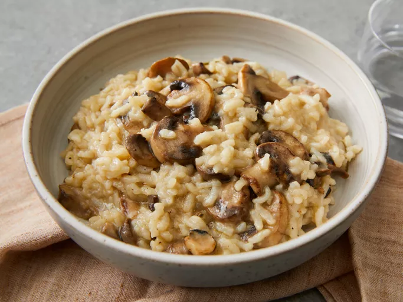

Risotto

This delicious Instant Pot risotto with tender mushrooms and Parmesan cheese is so simple and fuss-free to make. It tastes like a fancy dish ordered at an Italian restaurant! You'll probably start making risotto in your pressure cooker far more often after you try this recipe.
Ingredients
- Butter and oil: This recipe starts with butter and olive oil melted in the bowl of an Instant Pot.
- Vegetables: You’ll need three cups of diced mushrooms and a cup of chopped onion.
- Seasonings: The mushroom risotto is seasoned with fresh rosemary, salt, and pepper.
- Rice: Arborio rice is high in starch, so it’s perfect for making risotto.
- White wine: Choose a crisp, dry white wine like pinot grigio.
- Stock: Use store-bought or homemade chicken or vegetable stock.
- Parmesan: Parmesan cheese is the perfect finishing touch for this rich and creamy risotto recipe.
Steps
- Turn on a multi-functional pressure cooker (such as Instant Pot) and select Sauté function. Add butter and olive oil; stir until butter melts, about 2 minutes. Add mushrooms; cook, stirring occasionally, until slightly softened, about 3 minutes. Stir in onion; cook for 2 minutes. Add rosemary sprig; cook for 1 minute.
- Stir rice into the pot until each grain is coated with butter and olive oil mixture, about 2 minutes. Pour in wine; simmer for 3 minutes.
- Pour in stock, stirring to scrape the sides of the pot. Simmer for 1 minute.
- Close and lock the lid. Turn the venting knob to sealing. Select high pressure according to manufacturer's instructions; set timer for 6 minutes. It will take time for pressure to build.
- Tap venting knob a few times with a wooden spoon or spatula. Stand back; turn knob to point at vent. Remove lid when pressure is released, about 5 minutes.
- Stir risotto until creamy, about 1 minute. Discard rosemary sprig. Season with salt and pepper. Stir in Parmesan cheese until melted and combined.
- Serve hot and enjoy!